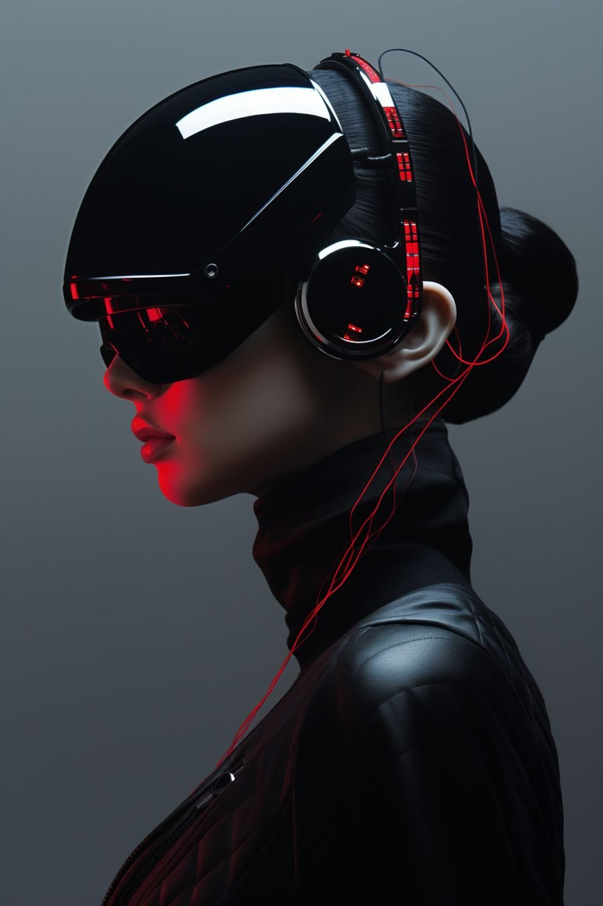
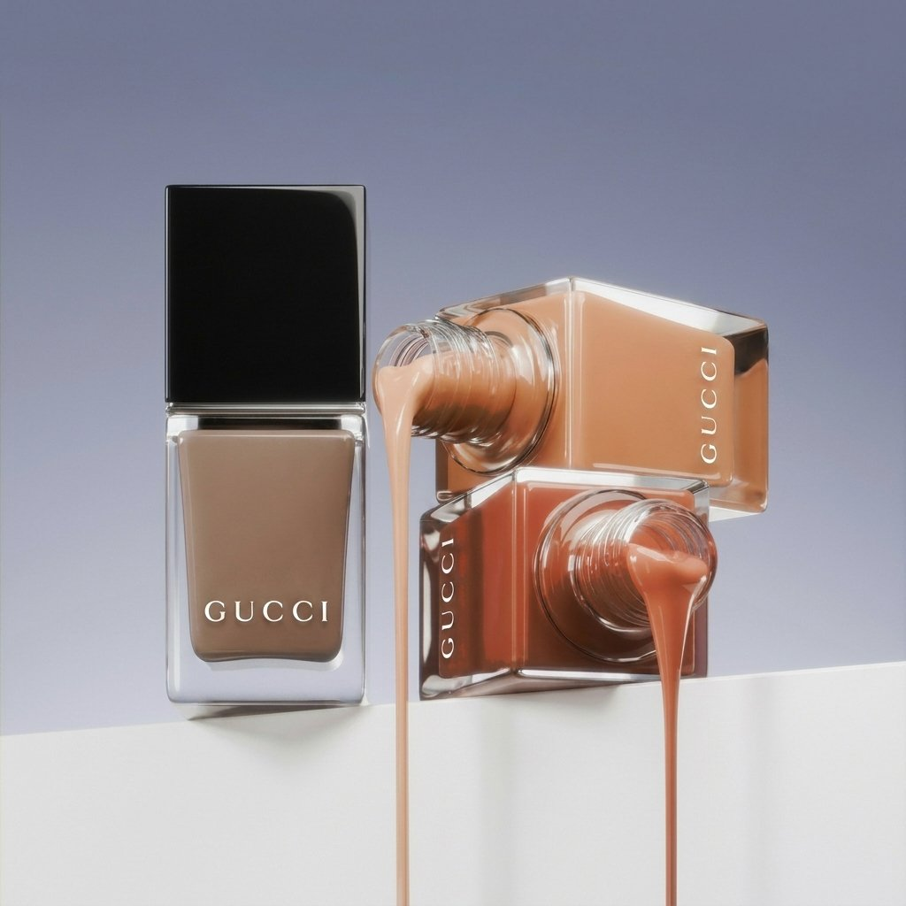
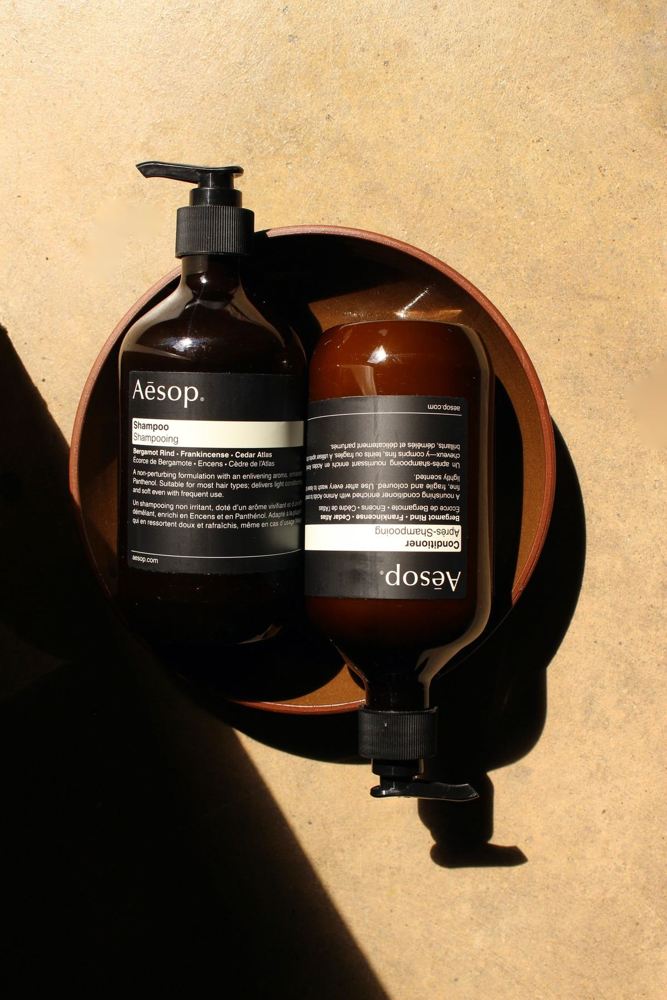
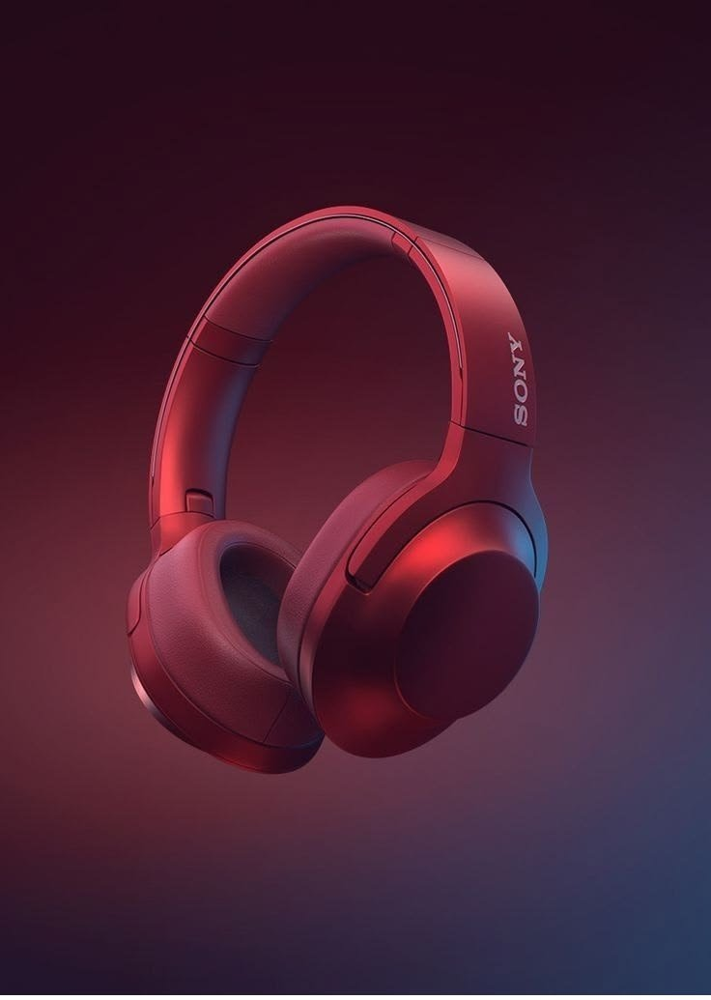
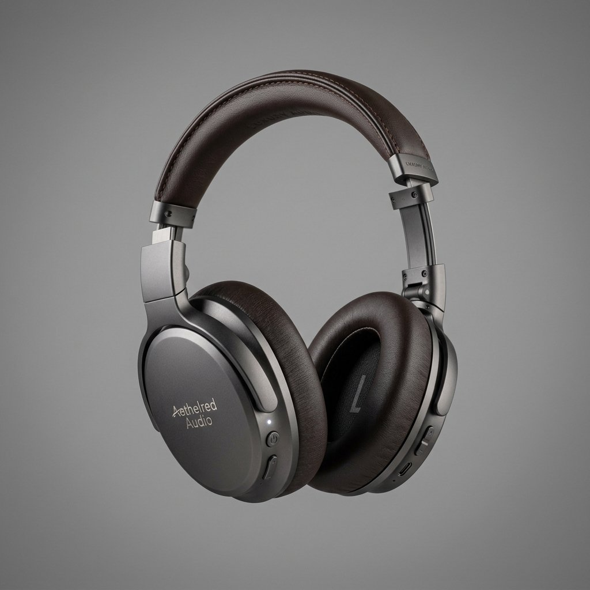
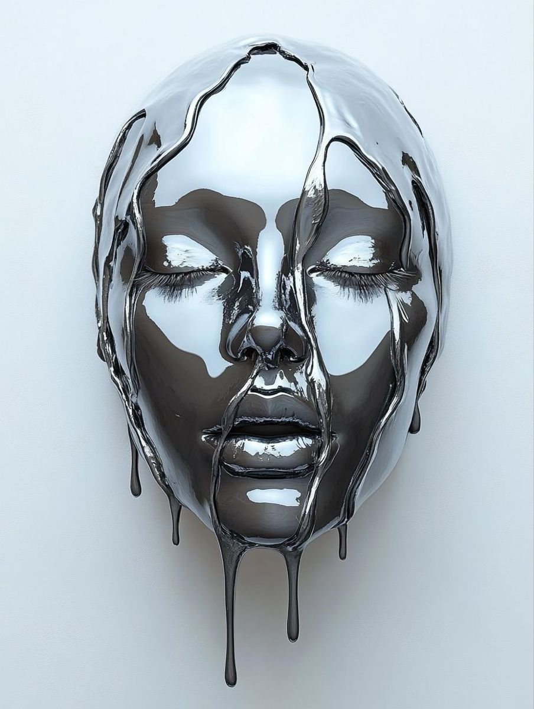
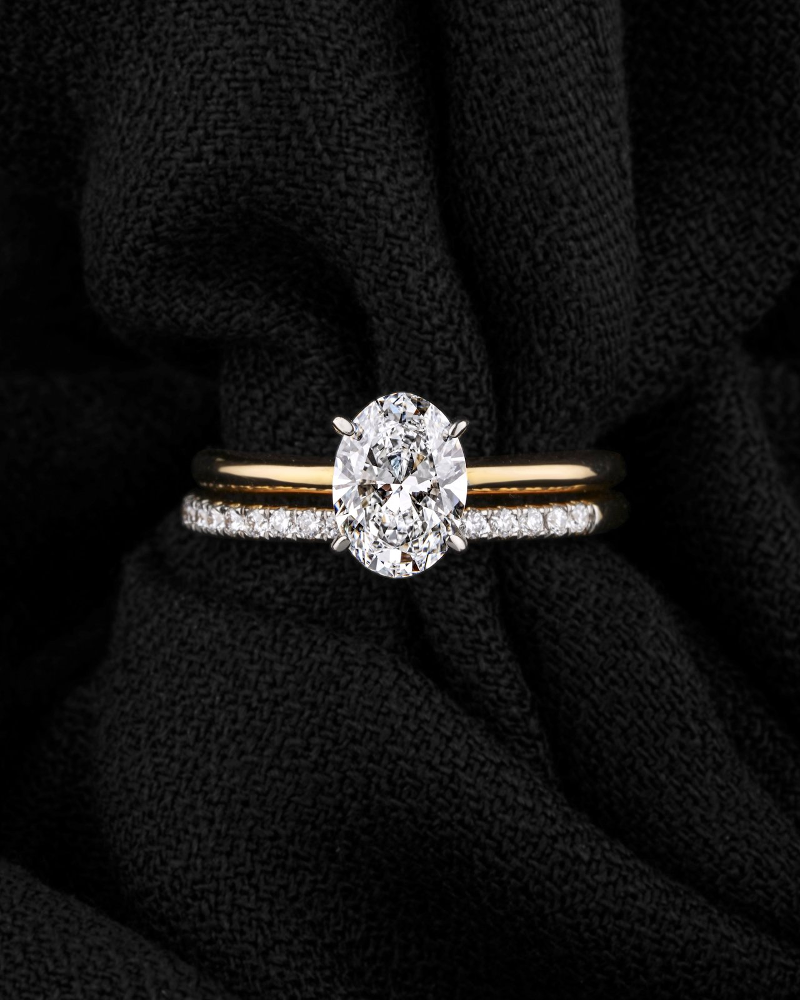
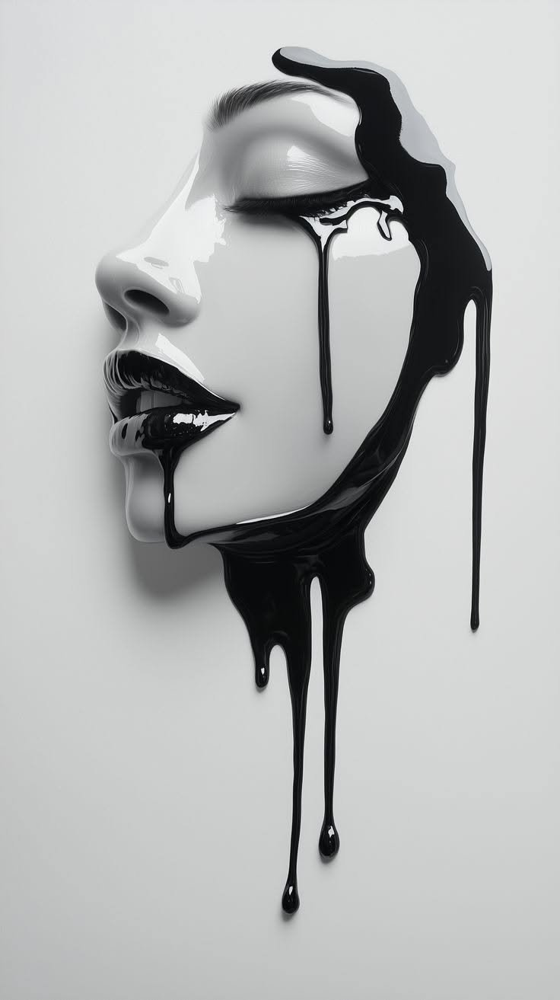
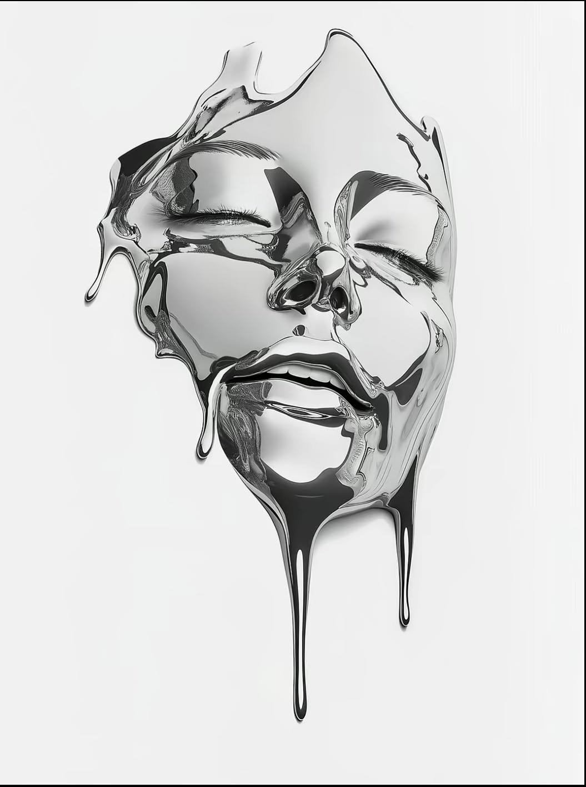
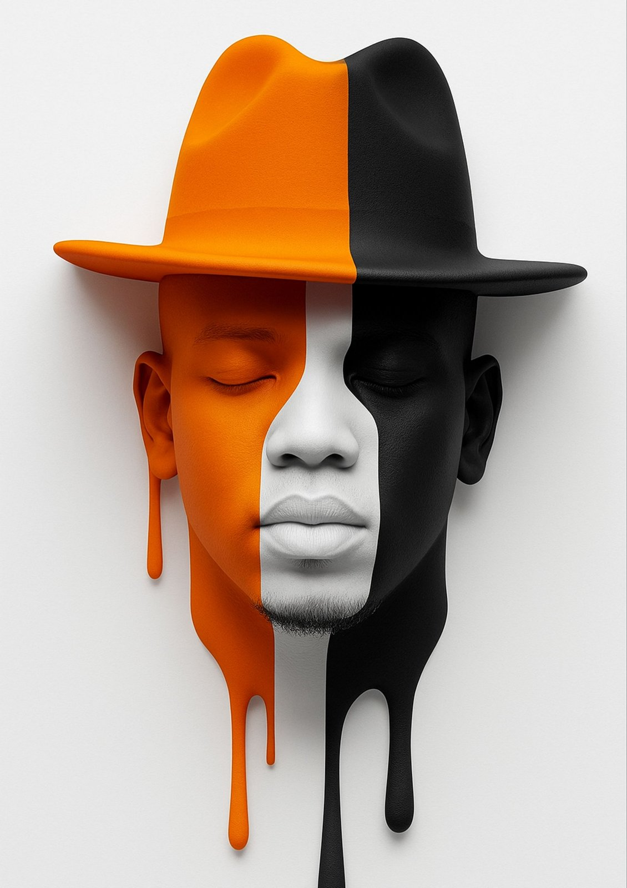

JavaScript · Demo JS
Half of this isn't CSS.
Move your pointer, drag a chip, open a panel — nothing below is a compiled keyframe.

tilt-3d — move your pointerOpens & closes
Six names, shipped today, and nothing else on the site shows them. Every one declares
defaultActivation: 'manual' — there's no transition-play-state to hold a
@starting-style transition behind on:enter, so each is driven by a real
open/close state instead: a native popover, a <dialog>, or a plain
element toggling [data-open].
Popover — 2
opens a top-layer popover
data-kui="fade-open" — native <button popovertarget>
menu anchored under the trigger
data-kui="drop-open" — popover, positioned by JS on toggle
<dialog> — 2
modal, focus-trapped, Esc closes it
data-kui="pop-open" — <dialog>.showModal()
non-modal, rest of the page stays live
data-kui="scale-open" — <dialog>.show(), no backdrop
[data-open] — 2
A plain <div>, toggled by this page's own JS — the primitive never touches structure, only the transition.
bottom sheet, settles up into place
Filters
data-kui="slide-open-up" — toggles [data-open]
top bar, arrives travelling down
data-kui="slide-open-down" — toggles [data-open]
Pointer
Nine names that read the raw pointer position every frame — nothing here has ever been expressible as a CSS transition.
Cursor — 5
Each zone spawns its own follower — move the pointer across, or Tab in.
Magnetic — 2
data-kui="magnetic" — move close
data-kui="magnetic-snap" — stronger pull
Tilt — 2
Move the pointer over each card, or Tab to it.

Drag & gesture
Eleven names over four primitives — draggable, swipeable,
pressable, magnetic — differing only in what happens on release:
nothing (drag), back to origin at varying spring stiffness
(elastic-pull, rubber-band, snap-back), or onward
with momentum (drag-inertia, throwable).
Momentum — 2
Return springs — 3


Axis — 3



Swipe & press — 3

Layout & FLIP
Nine names, one technique: the library measures each child's box before a DOM change,
measures again after, and animates only the delta. A layout change isn't expressible as
keyframes — these animate elements you control, driven by a
MutationObserver watching childList, subtree, and
the hidden attribute.
flip-filter — 1

flip-reorder — 1
Click any card — it jumps to the front and the rest reflow around it.


flip-sort — 1
flip-shuffle — 1

grid-to-list — 1


masonry-reflow — 1

expand-to-modal — 1
Click a card to expand it in place; the rest of the grid reflows around it.
accordion-height & slat-assemble — 2
MutationObserver on
childList/subtree/hidden. A class toggle on the
container fires none of those — grid-to-list's own list toggle re-appends
its children afterward for exactly this reason, to give the observer something to see.
draggable with return:true), different spring
stiffness. elastic-pull ships a soft return, rubber-band widens
the resistance before it lets go, and snap-back uses a stiff spring that
whips home fast.
0 and auto, here). It doesn't own
aria-expanded or the keyboard handling; this page's own script sets
[data-open] and the accordion just replays.

Text & numbers
Nine names that own the text node itself — splitting, decoding, cycling, or counting characters no @keyframes rule can address.
Resolve — 3
This sentence resolves itself, one flickering letter at a time.
01001010 01010011 00100000 01110100 01101001 01100101 01110010
ENGINE ONLINE
Typing — 1
A caret, a cursor, a sentence assembling itself.
Cycling — 1
drags
Numbers — 4
data-kui="split-flap"
data-kui="odometer-roll 2000ms to:4820"
data-kui="count-up 1800ms to:157" — the CSS-tier count
data-kui="count-currency 1800ms to:4820 decimals:0"
Backdrop
One attribute, one full-bleed layer. background installs its own <video> or <img> — sized, clipped, and play-while-visible — behind whatever you already wrote.
data-kui="bg src:… overlay:#000000 overlay-opacity:55%"
No wrapper, no <video muted loop playsinline>, no z-index rule — one attribute owns the clip, the scrim, and pausing it when it scrolls off screen.